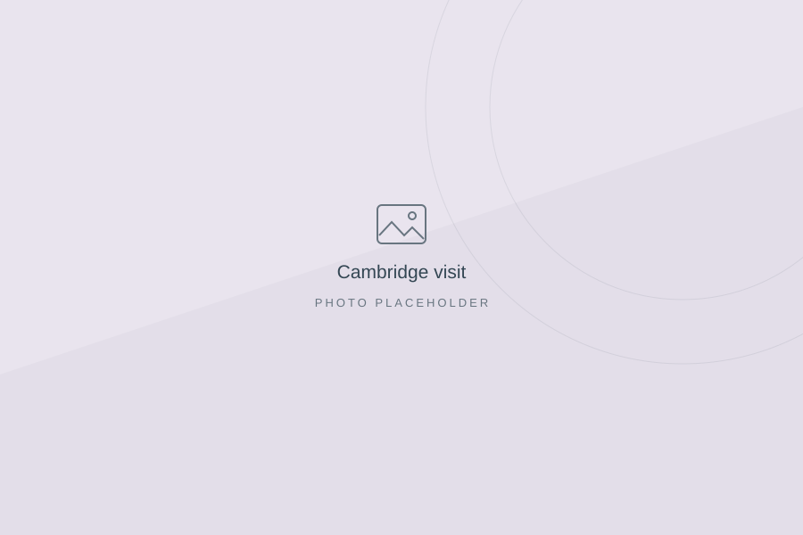
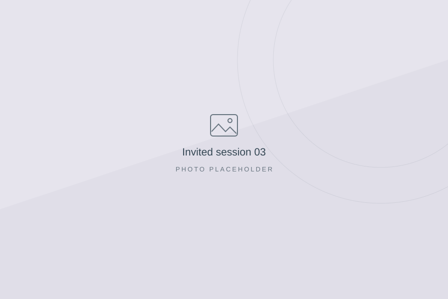

Academic visit
SUTD
Add the date and a brief description of your visit.
Academic life
Research visits, academic exchange, and invited sessions.
Academic visit
Add the date and a brief description of your visit.

Research visit
WISENET Group · Autonomous cyber-physical systems.

Research visit
Visiting researcher · August 2025–January 2026.

Academic visit
Add the date, host, and purpose of your visit.

Invited session
Add your session title, venue, date, and one sentence about the topic.

Invited session
Add your session title, venue, date, and one sentence about the topic.

Invited session
Add your session title, venue, date, and one sentence about the topic.
Selected for an MSCA postdoctoral fellowship in Slovenia.
Shortlisted for an MSCA postdoctoral fellowship in Ireland.
Replace with an award, fellowship, invited keynote, or another achievement.